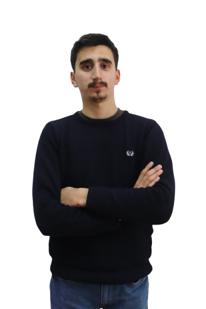

WEB / EDUCATION
AprenderMais
Plataforma educativa concebida para organizar conteúdos de aprendizagem por etapas e disciplinas do ensino português.
explorar_repositório()jplg@workstation:~$ whoami
João Gonçalves — Programador de Informática
jplg@workstation:~$ cat mission.txt
Construir software, explorar sistemas e transformar ideias em projetos.
jplg@workstation:~$
Formado em Programação de Informática, tenho interesse pelo desenvolvimento de software, sistemas de baixo nível e arquitetura de sistemas. Crio projetos próprios, incluindo a linguagem de programação Snakened, o sistema operativo Gonix Micro OS e a plataforma educativa AprenderMais.

01 // REPOSITORIES
Uma seleção de projetos de software, programação, educação e simulação científica.
Plataforma educativa concebida para organizar conteúdos de aprendizagem por etapas e disciplinas do ensino português.
explorar_repositório()Projeto web inspirado no universo de Rick e Morty, com uma abordagem criativa à temática dos portais e da ficção científica.
explorar_repositório()Mini leitor de música desenvolvido em JavaScript, dedicado à reprodução de áudio numa interface web.
explorar_repositório()Simulador MATLAB para o cálculo de distâncias entre satélites e estações terrestres, incluindo modelação de ruído.
explorar_repositório()Simulador de órbitas terrestres em MATLAB, com representação tridimensional das trajetórias orbitais.
explorar_repositório()Projeto independente de sistema operativo para x86, centrado no desenvolvimento de baixo nível, no arranque do sistema e na gestão de memória.
ver_código_fonte()Projeto de uma linguagem de programação orientada para o processamento matemático e a expressão de lógica computacional.
explorar_repositório()02 // TECHNICAL PROFILE
Tecnologias e áreas de interesse relacionadas com os meus projetos.
Programador de Informática com interesse pela construção de software, pela compreensão do funcionamento dos sistemas e pelo desenvolvimento de projetos próprios.
gonix/ — sistema operativo
snakened/ — linguagem de programação
aprendermais/ — plataforma educativa
03 // CERTIFICATIONS & LEARNING
Formação complementar relacionada com tecnologia, cibersegurança e desenvolvimento profissional.
Referência de formação associada ao Centro Nacional de Cibersegurança (CNCS).
2026Formação/referência associada ao Gabinete Nacional de Segurança (GNS); título oficial por confirmar.
2026Referência de formação associada à Porto Business School.
2026Referência a recursos ou atividades de aprendizagem.
2026Certificado como Técnico Programador de Informática no AEAL. / Conclusão 12º Ano
202204 // GET IN TOUCH
Para contacto profissional, colaboração em projetos ou troca de ideias sobre software, podes enviar-me um e-mail.
goncalvesjpl@outlook.com